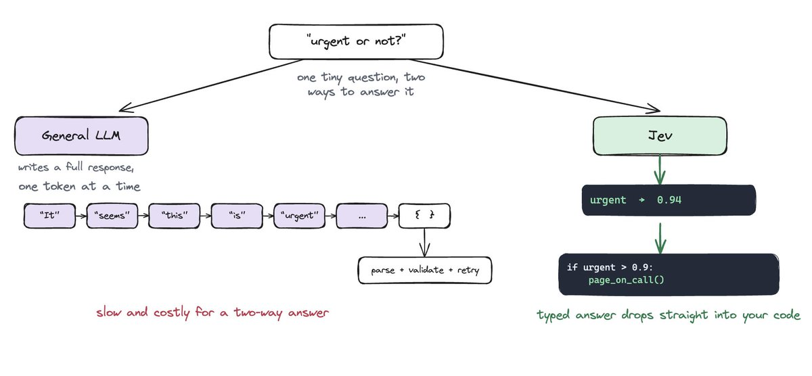
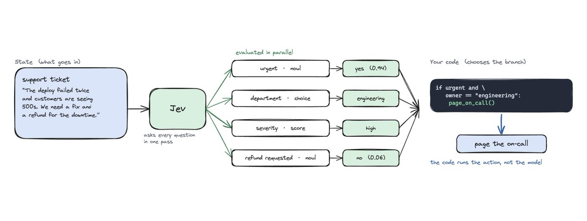
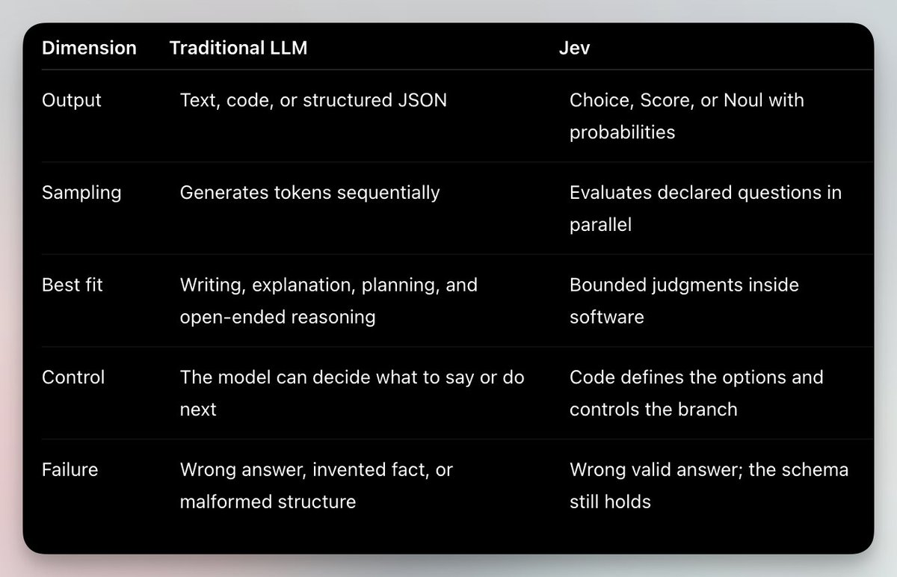
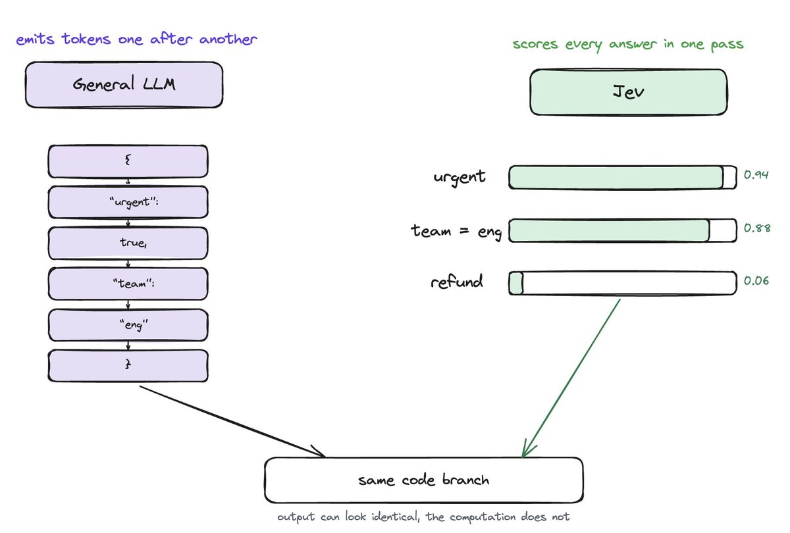
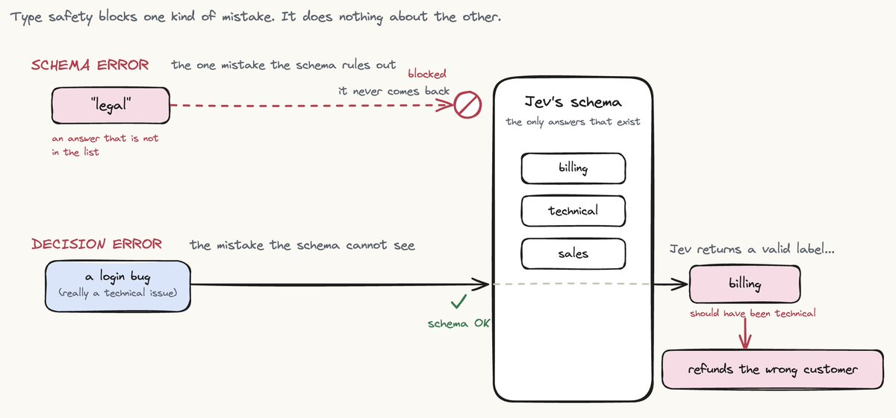
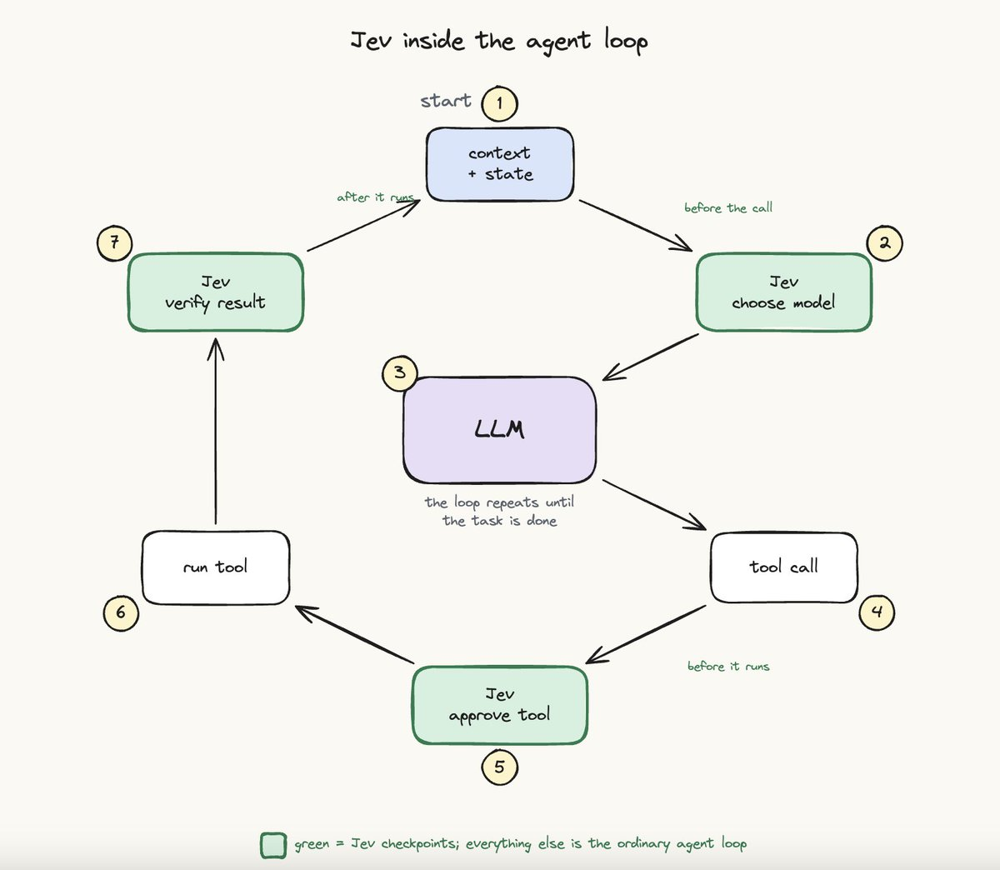
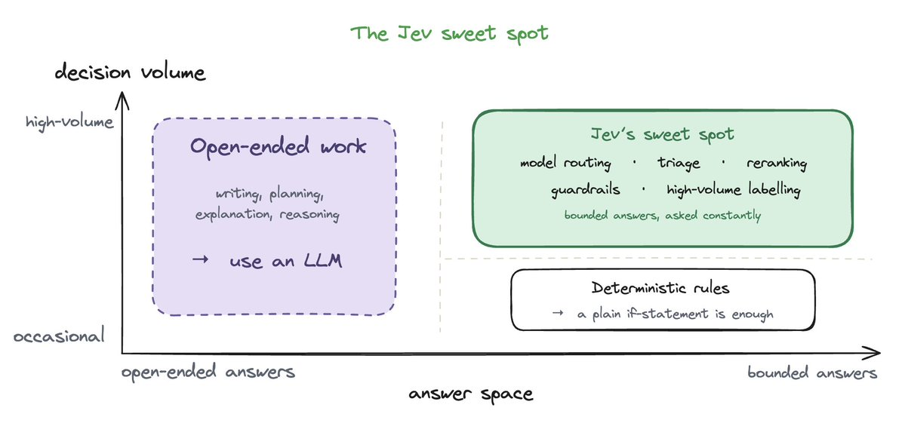
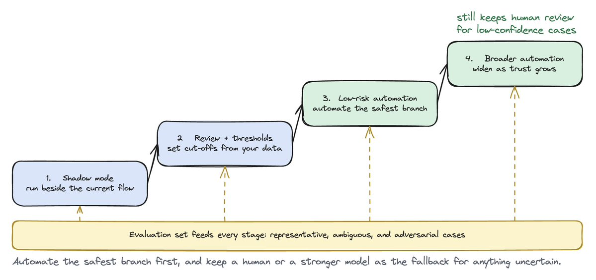

我们一直把LLM当成解决所有AI问题的锤子，连一个简单判断也要用它。Jev用毫秒级的时间和极低的成本来完成这些判断。下面来看看它怎么工作，以及它适合放在哪里。
TypeSafe AI在2026年9月15日发布了Jev。反响之强烈，对一个既不能对话、也不能写代码、甚至生成不了一段有用文字的模型来说，很不寻常。
而这种局限恰恰就是它的立意所在。
大多数软件并不需要再多一个聊天机器人。它需要的是做出成千上万个小判断，比如：这张工单紧急吗？这个请求该交给哪个模型处理？这条shell命令危险吗？检索到的这段内容回答了问题吗？
团队通常会把每个判断都交给通用LLM。模型一个token一个token地生成答案，应用再解析、校验，格式不对就重试。这样做能跑通，但对一个只有五个可能答案的判断来说，又慢又贵。
Jev就是为这类决策专门构建的。TypeSafe称它为System One模型：输入非结构化的状态，输出带类型的答案和概率。
下面拆开来看这意味着什么、它适合放在哪里，以及哪些宣传话术需要收一收。

有了工具调用和结构化输出之后，把LLM接入软件变得容易多了。
工具调用让模型能以可预测的形式请求某个函数；结构化输出让它返回符合schema的JSON。两者都消除了大量脆弱的解析代码。
但底层模型仍然是生成式的。哪怕答案只是一个词billing，它也是按顺序一个token一个token地生成。你要为输入付费、等待生成过程，而且往往为输出付更多钱。
现在把它放进一个智能体循环里。
while not done:
action = llm(context)
result = run_tool(action)
context += result模型可能还要被再调用一次：选工具、判断结果、识别风险、决定任务是否完成、挑选下一个模型。一次智能体运行里，可能有很多调用只需要判断，并不需要生成散文。
Jev面向的就是这些调用。
它押的赌注很简单：当代码已经知道所有可能答案时，语言生成就是一种错误的接口。
最简短也最准确的描述是：一个语义决策引擎。
你给Jev发送两样东西：
● State：描述当前状况的文本或JSON。
● Questions：你希望它针对这个状况做出的决策。
每个问题都要事先声明答案的形状。Jev支持三种原语：
● Choice：从你定义的选项列表里挑一个，并为每个选项返回一个概率。
● Score：把输入放到你定义的有序刻度上，比如低、中、高。
● Noul：回答是/否问题，返回它为真的概率。
Noul是TypeSafe给这个布尔型原语起的名字。名字奇怪不重要，重要的是它的输出：一个0到1之间的数字，你的代码可以直接依据它行动。
{
"model": "jev-latest",
"state": "The deploy failed twice and customers are seeing 500s.",
"questions": {
"urgent": {
"type": "noul",
"instructions": "Does this need attention right now?"
},
"owner": {
"type": "choice",
"instructions": "Which team should handle this?",
"criteria": {
"engineering": "Product failures and outages",
"billing": "Charges, invoices, and refunds",
"sales": "Pricing and new accounts"
}
}
}
}返回结果里有一个紧急程度的概率，以及覆盖三个团队的概率分布。没有需要解读的段落，也没有第四个团队留给模型去编造。
你的程序始终掌握控制权：
if urgent > 0.9 and owner == "engineering":
page_on_call()
elif confidence < 0.6:
send_to_human_review()
else:
add_to_queue(owner)这就是大家总说Jev是一个聪明的switch语句的原因。这个说法听起来像贬低，但它抓住了设计中有用的部分：分支归普通代码所有，模型只提供普通代码无法可靠计算的那种模糊判断。

传统LLM和Jev都能对客服工单分类。它们得出答案的方式不同，也分别适合系统里不同的位置。

TypeSafe说Jev会并行评估一个请求里的所有问题。这会改变工作流的设计方式：不必问一个问题、等结果、再决定下一个问题，你可以把针对同一状态的每个独立问题放进一个请求，然后让代码取用它需要的答案。
该公司给出的端到端延迟在70到500毫秒之间，价格为每百万输入token 0.042美元，输出免费。它对外宣传的数字达到比同类LLM工作流快约200倍、便宜约400倍。
这些倍数来自TypeSafe自己的工作流评测，并且处在对比中最有利的一端。把它们当作上限，而不是对每个应用的承诺。底层优势本身仍然可信：Jev之所以能避开冗长的推理轨迹和生成式输出，是因为它是为有界决策设计的。

带类型的答案只解决了一半问题。
假设Jev把一张工单路由给账单团队。被选中的标签告诉你谁赢了，概率分布告诉你这场竞争有多接近。
{
"choice": "billing",
"probabilities": {
"billing": 0.52,
"technical": 0.46,
"sales": 0.02
},
"confidence": 0.18
}把这张工单自动路由出去是鲁莽的。账单赢了，但只赢一点点。低置信度的答案应该触发另一条分支。
这给开发者带来一个实用模式：
● 高置信度：后果轻微时自动执行。
● 中等置信度：请求确认，或调用更强的模型。
● 低置信度：交给人工处理，或补更多信息。
阈值属于代码，因为在那里才能被审阅和修改。一个仪表盘标签可以容忍较弱的预测，而一条删除数据的命令需要高得多的门槛。
TypeSafe用「校准决策强化学习」（RLCD）训练Jev。目标是让置信度在许多次预测中真实反映准确率：如果模型给一批答案90% 的概率，那么这些答案里大约90% 应该是正确的。
TypeSafe说Jev不会产生幻觉。这句话只在很窄的定义下成立。
Jev不会返回schema之外的选项。如果你定义了账单、技术、销售，返回结果就不可能冒出个「法务」。它也不会在你期待一个标签的地方输出一段格式错乱的文字。
但它可以很自信地选错一个合法的选项。
类型安全防的是非法的形状，不保证判断正确。这个区别很重要：一个符合schema的错误依然可能给客户退错款、把事故路由错、或者批准一条危险的命令。
更稳妥的说法是：Jev不会破坏声明的输出schema，但它仍然可能出错。

Jev最好的用法是与LLM搭配，而不是替代LLM。
需要语言能力或更深推理的工作交给LLM：它做规划、写内容、解释说明、调用工具。围绕这些工作产生的频繁判断交给Jev。
有三个位置特别值得一试。
一次简单查询不需要和一次架构评审用同一个模型。Jev可以给请求打分，选出最有可能完成它、且最便宜的模型。
route = jev.choice(
state=user_request,
options={
"fast": "Lookups, extraction, and small local edits",
"powerful": "Architecture, ambiguity, and high-stakes work",
},
)
model = fast_model if route == "fast" else powerful_model路由器不回答请求，它决定该由哪个模型来回答。
在智能体执行shell命令之前，Jev可以把它分类为只读、可回滚或破坏性。再用几个独立问题检查它是否会删除文件、改写Git历史、触碰生产环境，或者脱离仓库范围。
高置信度的只读操作可以直接执行；破坏性或不确定的操作可以暂停，等人工批准。LangChain的Jev集成就是用中间件实现这个模式：在工具调用执行前先做一次检查。
智能体可能声称任务已完成，而测试还在失败。Jev可以检查当前状态并回答几个有界问题：测试通过了吗？智能体是否在重复同一个动作？输出是否符合策略？这个结果需要人工复核吗？
在存在硬性测试的地方，它不会取代测试。它增加的是语义检查，用于那些规则取决于含义、无法用硬条件表达的场合。

最好的用例都具备三个特征：你能说清所有可能的答案；一个认真的人可以很快做出判断；这类决策发生得足够频繁，以至于延迟或成本真的重要。
● 对意图、紧急程度、所属部门、垃圾信息和客户情绪做分类。
● 用几个小检查来处理退款和政策例外。
● 在人读之前，按语义严重程度给日志和事故排序。
一个请求就能针对同一张工单问完所有这些问题，代码再把答案组合成公司真正的路由策略。
● 按「这段内容是否回答了查询」对检索结果重排。
● 检查一条引用是否真的支撑了某个论断。
● 在把上下文送给昂贵的LLM之前，先过滤掉不相关的片段。
嵌入擅长找到语义相关的文本，Jev则做更窄的判断：某一段内容对当前这个问题到底有没有用。
● 筛查提示词里的越狱或提示注入。
● 按策略或评分标准检查生成内容。
● 在执行之前标记有风险的代码改动或工具调用。
这些检查应该和确定性控制并存：语义分类器适合模糊的风险判断，权限、沙箱和测试则负责执行软件能精确验证的规则。
● 给文档、论文、商品条目或客户消息打标签。
● 把自由文本转成传统机器学习模型可用的特征。
● 用同一套标准给大语料里的每一条打分。
单次调用成本低，在这里才不只是个跑分数字：过去因为太贵而无法逐行执行的判断，现在可以进入常规数据管道。
● 从已知的页面元素里选择浏览器的下一个动作。
● 在人写作的过程中给语气或清晰度打分。
● 从结构化的游戏或模拟器状态里选择一个动作。
Jev目前只支持文本，所以这些系统必须先把手头的环境转成文本或JSON。它不会看屏幕，也不从像素里玩游戏。

一旦答案空间不再是已知的，Jev就没那么好用了。
● 它不能写回复、摘要文档、生成代码，也不能解释自己的推理过程。
● 它在算术、计数、日期比较或精确字符串操作上不可靠，这些运算留给代码。
● 当一个决策需要好几步隐藏推理时，它很吃力。把判断拆成更小的问题，或者改用推理模型。
● 它无法直接抽取一个未知的值。先找出候选值，再让Jev在其中选择。
● 不相关的上下文会降低准确率，只发送做出判断所需的状态。
● 闭源权重、早期访问、仅文本输入，加上独立校准数据有限，现在盲信它还太早。
还有一条更简单的规则：如果确定性代码已经能正确解决问题，就留着代码。一个普通的if语句比任何模型都快、都便宜，也更容易测试。
一个便宜的模型依然可能很贵：一旦它的错误带来重试、人工复核或线上事故。要衡量整个工作流，而不只是token单价。
一个稳妥的落地过程是这样的：
1 选一个有界、低风险、答案明确的决策。
2 在调用模型之前先写好评分标准，定义每个选项涵盖什么。
3 收集有代表性、带标准答案的样本，包括模棱两可和对抗性的例子。
4 让Jev以影子模式跑在当前工作流旁边，不让它改变任何行为。
5 画出准确率与置信度的关系，并依据自己的数据设定阈值。
6 先自动化最安全的那条分支，不确定的情况仍然交给人或更强的模型。
7 固定或记录模型版本、问题、标准和阈值，这样任何改动都能在同一个评测集上重放。
这些问题本身就是程序的一部分。像对待代码一样对待它们：做版本管理、做评审，并在模型或标准变动时重新测试。

Jev有意思的地方不是它写文章比LLM好，而是它拒绝写作。
它的贡献在于一个按软件形态设计的模型接口：固定的答案类型、显式的不确定性、可并行的问题，以及由代码控制的分支。
这使它成为生成式模型的有用搭档：LLM产出计划、解释或代码，Jev负责路由请求、给危险动作把关、检查结果，并判断不确定性高到什么程度就该升级处理。
即使将来有别的模型取代Jev，这个更大的思路依然成立。这些年我们一直要求生成式模型用文本完成所有形式的智能。但很多生产系统需要的不是更多文字，而是一个足够小、足够快、普通软件也能安全使用的判断。
这正是Jev想要立起来的那一类能力。
不要一开始就围绕Jev重写你的智能体。先找出一个目前要么依赖缓慢的LLM调用、要么靠一条总是出问题的正则来做出的判断。
给Jev最少的状态，定义好可能的答案，把它的概率和现有结果并排记录下来。让它先证明自己配得上一条分支，再去接管整个工作流。
最实用的心智模型依然是最简单的那个：普通if语句能看懂取值、却看不懂含义的地方，就是Jev补上判断的地方。
TypeSafe AI发布说明: https://typesafe.ai/blog/introducing-system-one-models-and-jev
LangChain用Jev构建执行框架: https://www.langchain.com/blog/building-a-harness-with-jev
Flavio Copes的Jev深度解析: https://flaviocopes.com/jev/
参考：https://x.com/akshay_pachaar/status/2101037514945597645